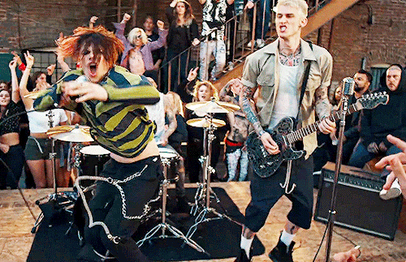
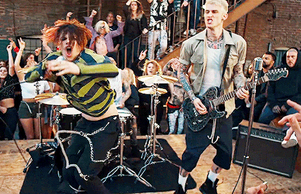

Tickets To My Down Fall is a group composed of Machine Gun Kelly, Travis barker, Yung Blud.
The band has been together since 2016, since MGK short for Machine Gun Kelly recorded a song with Travis barker and then the two became good friends.
The two the went out and made an album together. Shortly after being on tour Yung Blud heard their musicand loved it.
Since it was so similar to his, he then work together with the pair and instanly the song became a hit. So they asked him to join the band.
After that they recorded there first studio album together and it instanly went #1 on the the top 200 chart of billboard.
They had two hits that made the top 10 on the hot 100 list, on being (Forget me too) that went number #1 and (Lonely) that debuted at number 8.
So then band contiued to record two more studio album and started to take over the rock music industry. Those two albums both made the top 200 chart,
they are still trending the charts. There first studio album (The Raise) made about 2million and sold more copies then any rock album about to date.
Also dominating the streaming charts Tickets For My Down Fall has become a house hold name winning many award including a grammy and best band of the year
at the vma's.
Awards / History
The band is critically acclaimed and has began touring all over the world we are glad to introduce you to them if you don't already
know who they are. Machine Gun kelly also know Richard Colson Baker (born April 22, 1990)started out as a rapper first and become world wide with his freestyles
and just bring up a whole new sense of rapper. He also an American singer, rapper, songwriter, and actor.
His debut album, Lace Up, was released in 2012, and was followed up with four subsequent studio releases. As an actor, Baker made his film debut
in the 2014 romantic drama Beyond the Lights. He has also appeared in several other films and had a recurring role on the Showtime series Roadies
in 2016. Now we move on to Travis barker (born November 14, 1975)know form being part of the famous band Blink-182 and now Tickets For My Down Fall.best known as the drummer
for the rock band Blink-182. Barker has also performed as a frequent collaborator with hip hop artists, is a member of the rap rock group Transplants,
founded the rock bands +44 and Box Car Racer, and most recently joined Antemasque and Goldfinger. He was a frequent collaborator with the now-late DJ AM,
and together they formed TRV$DJAM. Due to his fame, Rolling Stone referred to him as "punk's first superstar drummer" as well as one of the 100 Greatest Drummers of All Time
Last but not least Yung Blud also know as Dominic Richard Harrison (born 5 August 1997), known professionally as Yungblud, is an English singer, songwriter, and actor.
In 2018, he released his debut EP, Yungblud,[8][9] followed by the full-length album 21st Century Liability.[10] The following year, Yungblud released another EP,
The Underrated Youth.[11][12] Now part of Tickets To My Down Fall Yungblud has way more sucesses then when he was a solo artists.


 
